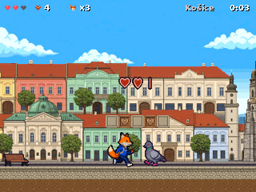
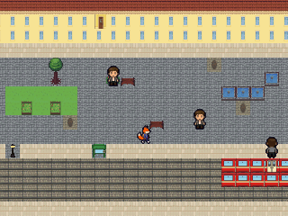

Zajka
Choisis ta cartouche
Slovingo · 16 bit
1 joueur
Zajka Run

Plateformes
Košice → Tatry
▶ Jouer
Slovingo · 16 bit
1 joueur
Zajka Quest

Aventure &
cours de slovaque
▶ Jouer
← Retour au cours
Versions web des jeux ESP32 / Odroid-Go (dossier
esp32/
)